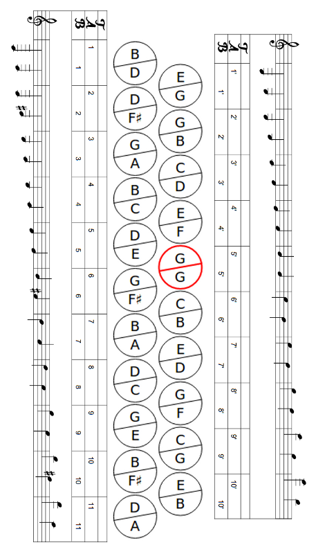
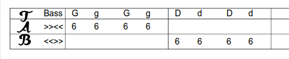

Sistemática da Tablatura para Acordeon Diatônico
Conhecendo a 8 Baixos
Antes de começarmos a entender a sistema de tablaturas para acordeons, vamos examinar a disposição dos botões de uma gaita de 8 baixos.
Tomemos como exemplo um acordeon afinado em Sól/Dó, segundo a “Afinação Diatônica Brasileira Natural”. O botões devem estar dispostos conforme a figura abaixo:

Figura 1: A gaita Hohner de 21/8 botões, afinada em Sol e Dó.
Por se tratar de um acordeon diatônico, observe que cada botão emite duas notas distintas, salvo o botão destacado em vermelho, que é chamado de “pedal”. Por isso, também, chamamos o acordeon diatônico de “Gaita Ponto”.
Neste material, adotamos algumas convenções. A saber:
- As notas são representadas por letras maiúsculas.
- Os acordes (dos baixos) são representadas por letras minúsculas.
- Os acordes menores são complementados com um hífen (-).
- Em cada botão, a nota representada na parte superior é a que soa quando o fole está fechando.
Conhecendo os Baixos (Mão esquerda)
Primeiramente, passe a mão esquerda através da alça dos baixos. Os oito botões que são acessíveis para você agora, estão dispostos em quatro pares, conforme figura 2.

Figura 2: Mapa dos baixos de um acordeon diatônico (G/C)
Tomemos como exemplo, o par destacado em vermelho. Para cada par:
- o botão inferior representa a nota do baixo (letra maiúscula).
- o botão superior representa o acorde (letra minúscula)
Observe ainda que obteremos o baixo em Sol (G) e acorde sol (g) fechando o fole, enquanto que, abrindo o fole, obteremos o baixo em Ré (D) e o acorde ré (d).
Conhecendo a Numeração dos Botões (Mão direita) (horizontal)
Considere a gaita na posição horizontal e o lado esquerdo como o topo da mesma. Para identificar os botões, vamos contá-los da esquerda para a direita (isto é, de cima para baixo). Também para diferenciar, uma fileira de botões da outra, vamos contá-las de fora (primeira fileira ou fileira externa) para dentro (segunda fileira ou fileira interna). Na primeira fileira, a contagem começa em 1 e vai até o último botão da fileira. Na segunda fileira, recomeçamos a contar de 1 até o último botão, mas para diferenciar da primeira fileira, incluiremos um apóstrofo (') após o número. Caso haja uma terceira fileira, marca-se com dois apóstrofos ('').
Veja como fica o mapa de botões na figura abaixo:

Conhecendo a Numeração dos Botões (Mão direita)(vertical)
Considere a gaita na posição horizontal e o lado esquerdo como o topo da mesma. Para identificar os botões, vamos contá-los da esquerda para a direita (isto é, de cima para baixo). Também para diferenciar, uma fileira de botões da outra, vamos contá-las de fora (primeira fileira ou fileira externa) para dentro (segunda fileira ou fileira interna). Na primeira fileira, a contagem começa em 1 e vai até o último botão da fileira. Na segunda fileira, recomeçamos a contar de 1 até o último botão, mas para diferenciar da primeira fileira, incluiremos um apóstrofo (') após o número. Caso haja uma terceira fileira, marca-se com dois apóstrofos ('').
Veja como fica o mapa de botões na figura abaixo:
A tablatura

Figura 4: A tablatura
Nota: A linha superior indica o baixo; a segunda linha mostra os botões da mão direita pressionados com o fole fechando e terceira linha, botões pressionados com o fole abrindo. A quarta linha não faz parte da tablatura: serve somente para explicitar a função do fole.
Exercício 1:
Para este primeiro exercício, considere o par de botões no topo, do lado de fora.
1) Pressione o registro de ar e abra o acordeon.
2) Solte o registro de ar, o acordeon deve permanecer aberto (a perda de um pouco de ar é normal).
3) Pressione o baixo (G) alternando com o acorde (g), enquanto você fecha o acordeon: Você ouvirá o baixo e, em seguida, um acorde em sol maior . Quando o acordeon estiver fechado, continue o movimento, agora abrindo, mas desta vez sem o uso do registro de ar. Você vai ouvir o baixo (D) e o acorde (d) em ré maior.
4) Repita este exercício, mas agora, cada vez que você pressionar o botão do baixo com a mão esquerda, pressione simultaneamente, um botão com o dedo indicador da mão direita, por exemplo, o sexto botão na fileira externa (primeira fileira). Garanta que pressionou e soltou o botão entre cada nota.

Obs.: Perceba que as notas puxadas (fole abrindo) são listadas na linha de baixo da tablatura!
6) Toque agora, o seguinte :
Figura
7) E depois, isto:
Figura
As notas da mão direita vão, neste exercício, ao longo de duas batidas. As batidas surgem com a mão esquerda:
Baixo batida 1
Acorde batida 2
Pressione o botão 6 com o seu dedo indicador, enquanto você toca uniformemente o baixo e o acorde; solte o botão e continue o exercício. Você está tocando agora meias notas.
8) E ainda, isto:
Figura
Dicas para execução do exercício:
- Comece devagar
- Levante o dedo após cada nota, mesmo se tocar a mesma nota várias vezes seguidas.
- Na mão esquerda é sempre o mesmo par: ( "G maior” fechando, “D maior” abrindo )
- Marque o ritmo com os pés (pisando com o baixo, levantando com o acorde)
- Quando memorizar a peça, cantarole enquanto toca.
Colaboração: PROF.CEZAR FERREIRA
Bacharel em Música pela Universidade Düsseldorf/Alemanha
prof.cezar.ferreira@ig.com.br
Tel. (51) 8129-8107